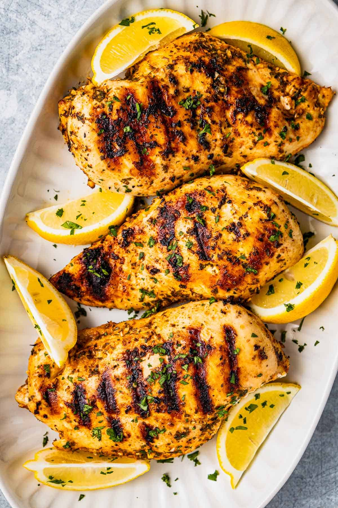

Greek Chicken Marinade

A bold and vibrant Greek-style marinade with garlic, oregano, lemon, and olive oil that works for any cut of chicken - grilled or baked.
4large garlic cloves, minced2 tspdried oregano1 tspsweet paprika1 tspfresh thyme leaves2 tbspfinely chopped flat leaf parsley leaves and tender stems⅓ cupextra virgin olive oil1lemon, zested and juiced- Kosher salt
- Black pepper
1½-2 lbschicken (thighs, legs, breast, or any cut)
In a large mixing bowl, combine the garlic, oregano, paprika, thyme, parsley, olive oil, lemon zest, juice, and a big pinch of salt and pepper (about ½ to ¾ tsp each). Whisk until well combined. Taste and adjust the salt and pepper to your liking - if you don’t plan to season the chicken separately, make sure the marinade has enough flavor.
Add the chicken or chicken cutlets to the marinade. Use a pair of tongs to toss the chicken so it is well coated, then cover and refrigerate for 2 to 8 hours (or if using chicken thighs, overnight is fine).
To grill: Lightly oil the grates and preheat your gas grill or an indoor griddle to medium. Arrange the chicken in a single layer over the heated surface. Grill for about 5 minutes per side, or until the internal temperature reaches 160°F. Remove from the grill and tent with foil for 5 minutes before serving (this will bring the meat to 165°F).
To bake: Preheat the oven to 425°F. If working with chicken breasts, slice them in half along the equator starting at the thicker side to make cutlets (they’ll cook faster and more evenly). Place the chicken in a single layer in a 9×13 baking dish and pour the marinade over top. Cover with foil and bake for 10 minutes.
Remove the foil and bake until the chicken is fully cooked and no longer pink in the middle (or reaches 160°F), another 10 to 15 minutes (longer for whole breasts). Remove from the oven, cover and let rest for 5 minutes - the chicken will come up to 165°F as it rests.